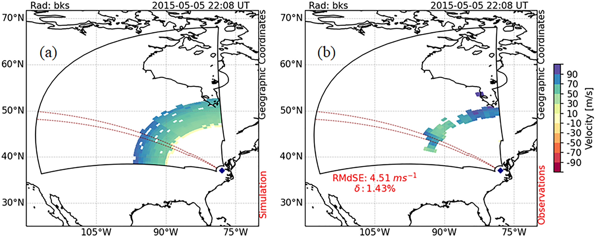
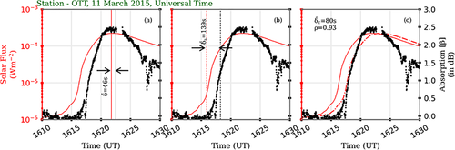

Solar Flare Effects on HF Radio & Ionosphere
Characterizing shortwave fadeout, the Doppler Flash, and ionospheric sluggishness driven by solar X-ray and EUV radiation
Overview
Solar flares pose a significant threat to High Frequency (HF) radio wave propagation, particularly in the frequency range of 3–30 MHz. This research delves into the intricate impact of solar flares on trans-ionospheric signals. A notable consequence of solar flares is the heightened absorption of HF signals at the D-region heights, resulting in what is commonly known as shortwave fadeout (SWF). Leveraging observations from the SuperDARN HF radar and employing first-principle-based modeling, this study characterized and modeled this flare-induced HF absorption.

Fig 1. Shortwave fadeout (SWF) event in SuperDARN observations.

Fig 2. Data-model comparison for SuperDARN Blackstone radar at peak of the Doppler Flash (22:08 UT). Doppler velocity simulated using the model (a) vs observations (b). RMSE and mean percentage error between modeled and observed values provided in panel (b). The region enclosed by red dashed lines represents beam 7.
The Doppler Flash
Beyond absorption, solar flares induce dynamic disruptions in the HF signal frequency, causing sudden phase and frequency shifts. This phenomenon, termed the 'Doppler flash,' precedes the HF absorption effect. Investigations into the sources of these abrupt shifts involved utilizing the NCAR/WACCM-X physical model and HF raytracing techniques. These efforts aimed at comprehending the underlying mechanisms of flare-driven alterations in signal characteristics, contributing to a nuanced understanding of the intricate dynamics involved.
Ionospheric Sluggishness
In addition to these investigations, this study revisited a less-explored ionospheric property known as sluggishness — an inertial aspect of the ionosphere. Research scrutinized its variations with solar flare intensity and provided insights into D-region ion chemistry through simulation studies. This holistic approach to studying solar flare impacts on HF communication, encompassing absorption, Doppler shifts, and ionospheric properties, contributes to a comprehensive understanding of the challenges posed by space weather phenomena.

Fig 3. Ionospheric sluggishness in Ottawa (OTT) riometer during solar flare on March 11, 2015, estimated using (a) conventional, (b) peak time derivative, and (c) correlation methods.
Ionospheric Electrodynamics
In recent times, this study has pivoted towards a more focused exploration of the impact of solar flares on ionospheric electrodynamics. This shift involves a detailed examination of the impulse signatures within ionospheric electrojets, with a particular emphasis on addressing the following question:
How does solar flare create the impulse in the ionospheric electrodynamics (Sq, Equatorial, and Auroral Electrojets)?
Ground-based HF radar observations have revealed the abrupt emergence of ionospheric backscatters, indicative of decameter-scale field-aligned irregularities, in close temporal proximity to the dawn terminator and after a substantial X9.3 solar flare. These irregularities, exhibiting radar line-of-sight Doppler velocities nearing 300 m/s, were aligned with equatorward reverse convection flow. To further investigate this phenomenon, Chakraborty has been honored with the 'Japan Society for the Promotion of Science (JSPS) Postdoctoral Fellowship (Short-term)' and the 'ISEE International Joint Research Fellowship from Nagoya University,' supporting international collaborative research in Japan into the intricate dynamics and implications of these ionospheric irregularities.

Fig 4. Global SWF monitoring capability using the SuperDARN network. Coverage shows the sunlit hemisphere during a major X-class flare event.

Fig 5. Comparison of observed SWF absorption with model predictions using the NCAR D-region HF absorption framework, showing excellent agreement.